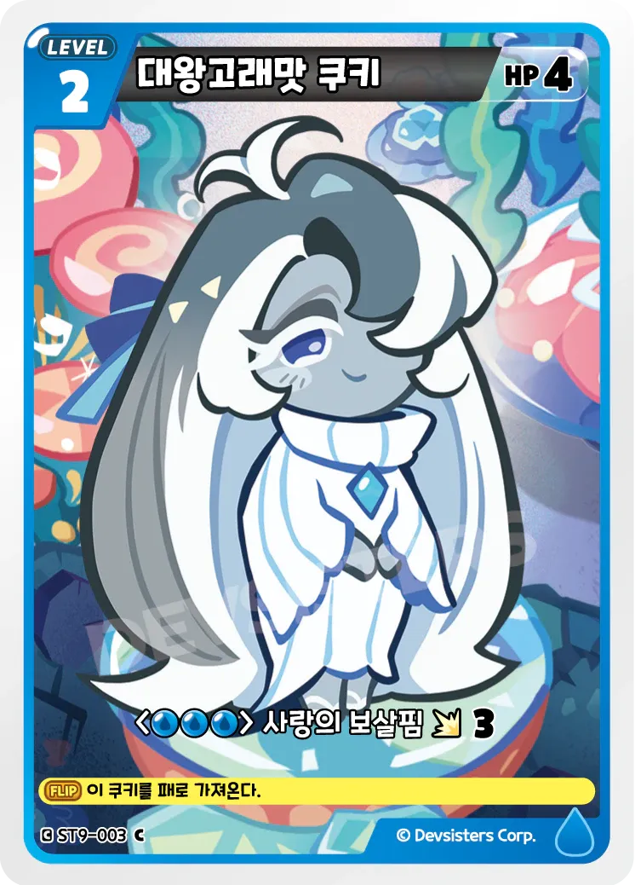
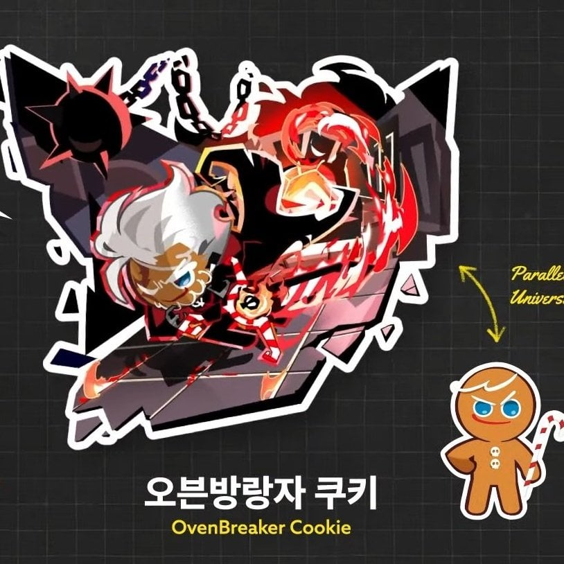
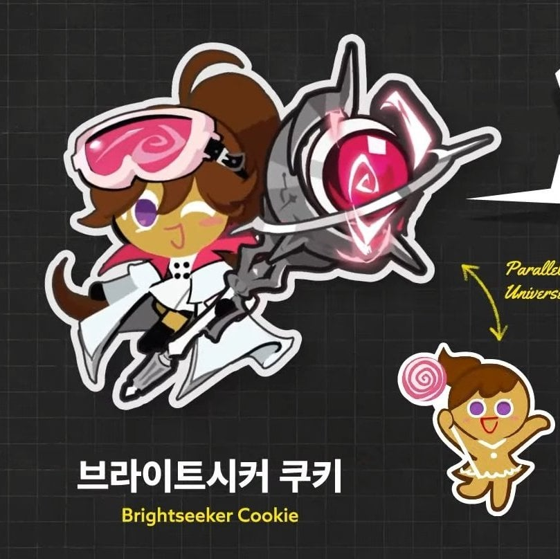

모카치노맛 쿠키
흑당맛 쿠키
어둠마녀 쿠키
라떼맛 쿠키
그린티무스맛 쿠키
암염권갑 쿠키

대왕고래맛 쿠키
우무맛 쿠키
포비돈요오드맛 쿠키
굴맛 쿠키

평행세계의 용감한 쿠키

평행세계의 명랑한 쿠키
모카치노맛 쿠키
흑당맛 쿠키
어둠마녀 쿠키
라떼맛 쿠키
그린티무스맛 쿠키
암염권갑 쿠키

대왕고래맛 쿠키
우무맛 쿠키
포비돈요오드맛 쿠키
굴맛 쿠키

평행세계의 용감한 쿠키

평행세계의 명랑한 쿠키
아직 10주년 이벤트 진행중 쿠키런오븐브레이크 뉴비 절찬환영
남캐들이 맛있더라
기존 밋밋한 쿠키를 평행세계라는 설정으로 리메이크한거는 멋지내
아 쿠키런 해야겠네